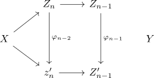
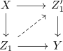
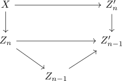
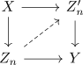
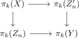
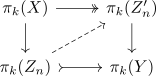

Moore-Postnikov stages unique up to weak homotopy equivalence
Proposition
Let $f: X \rightarrow Y$ be a continuous map between pathconnected topological spaces Then any Moore-Postnikov stage is unique up to a zigzag of weak homotopy equivalence
Proof
We may assume Then consider

with all $\varphi_n$ are weak equivalences
by relative cw complex and serre fibration and injection surjection criteria

Inductively construct the $\varphi_n$ as follows:

fibre of moore postnikov tower
2)
Assume we have

then we get a diagram

$k < n$
$k > n$
$k = n$
Then
